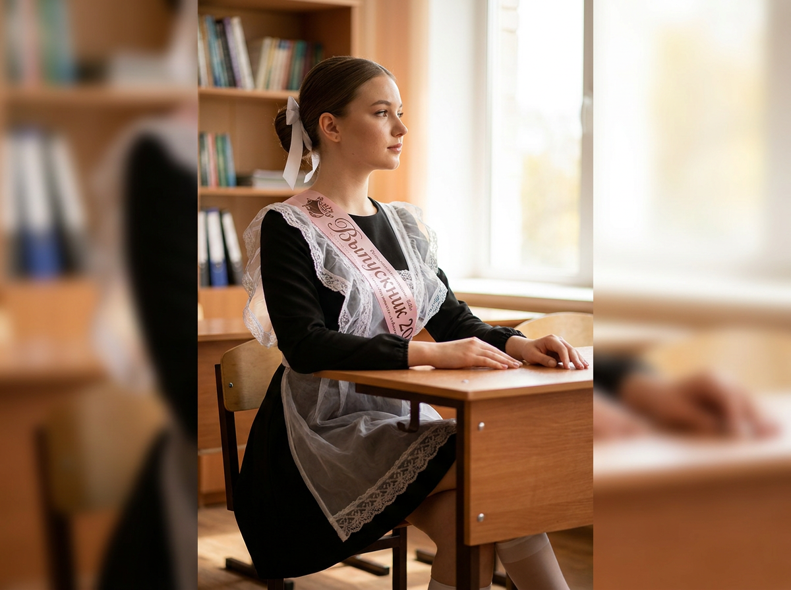
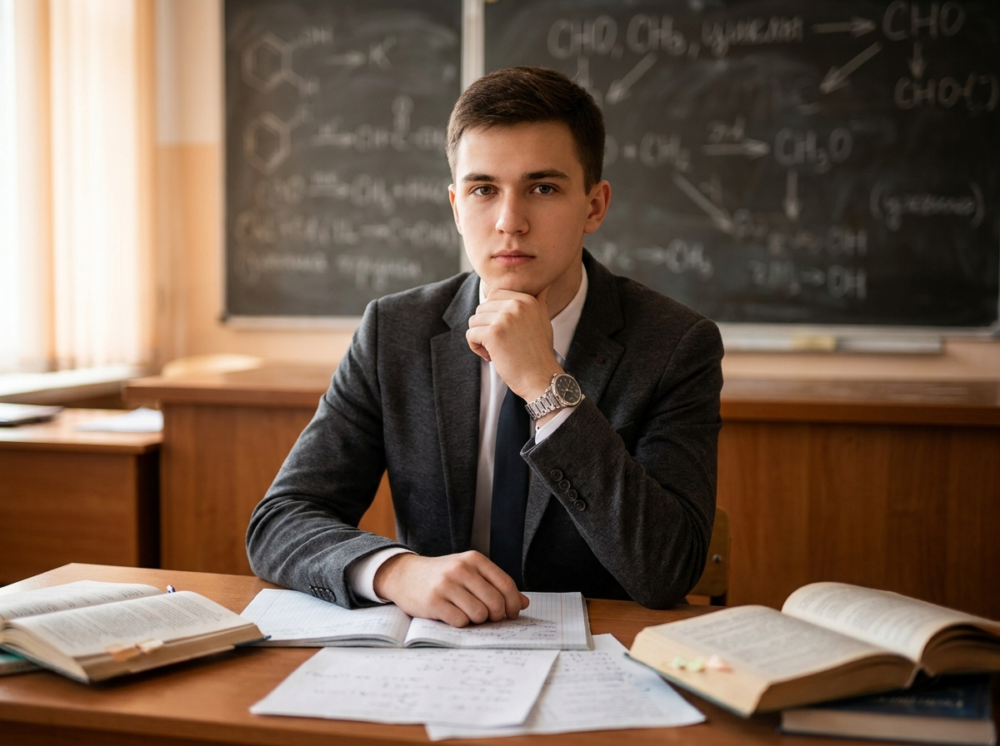
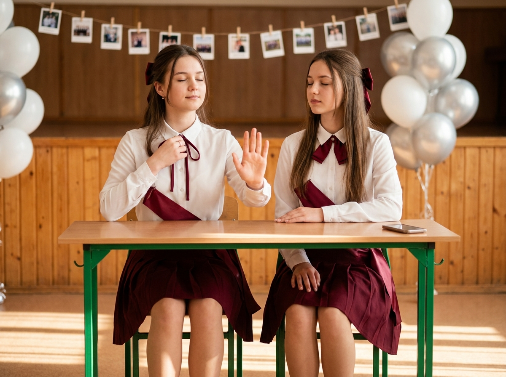
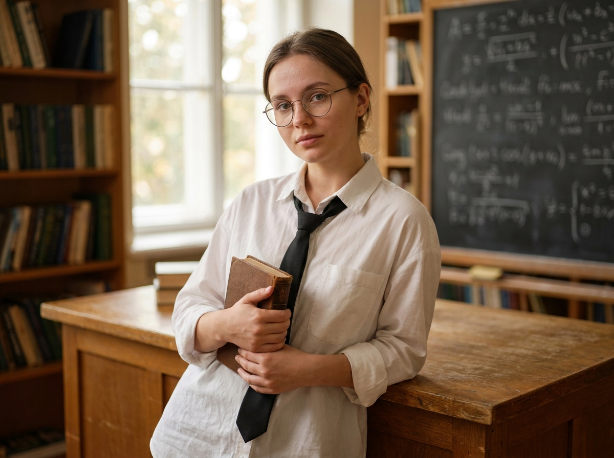
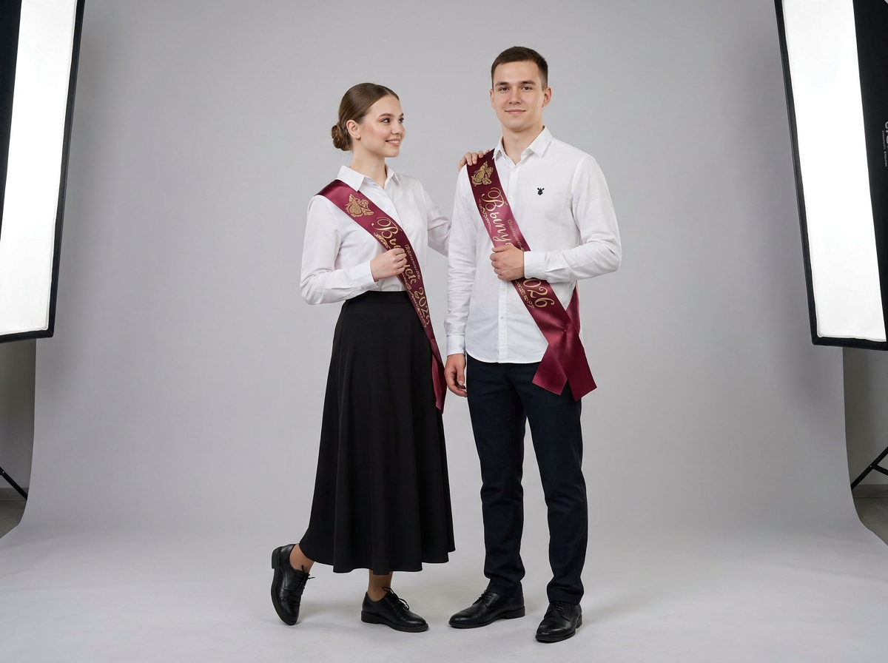
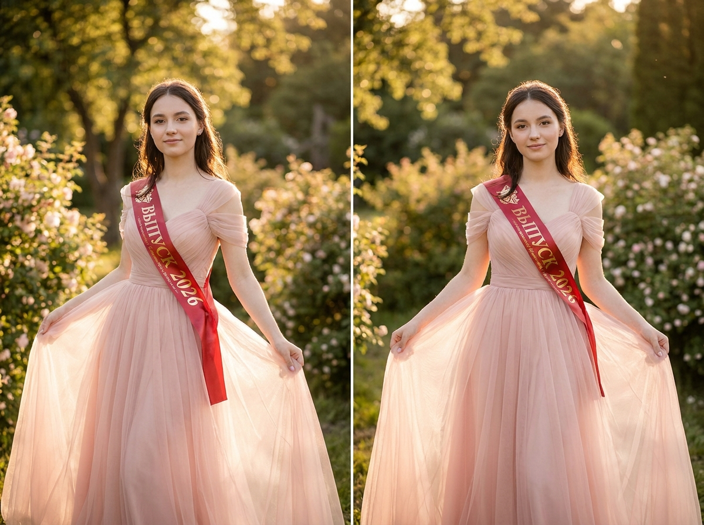
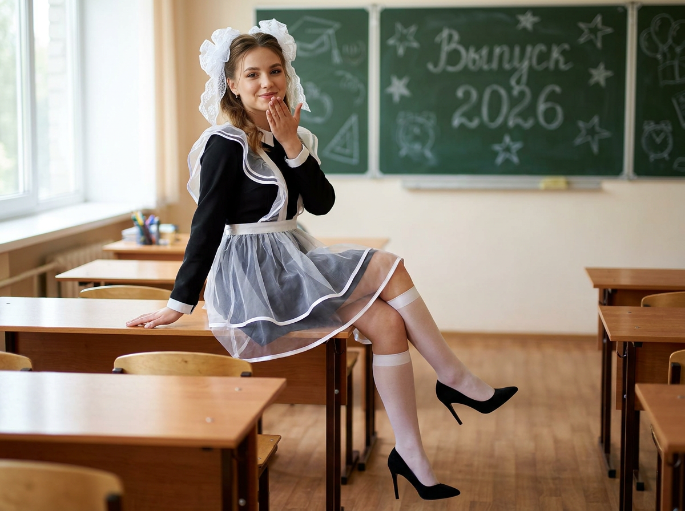
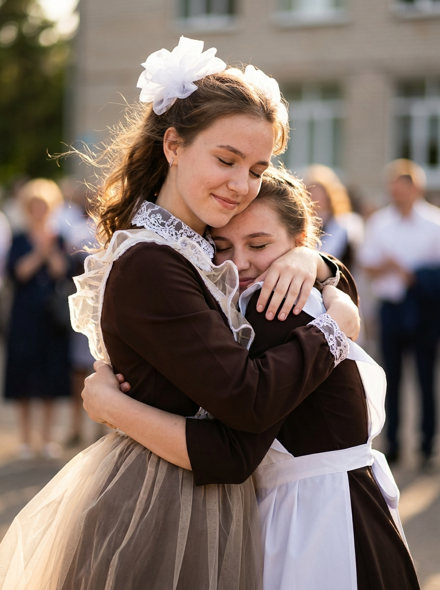
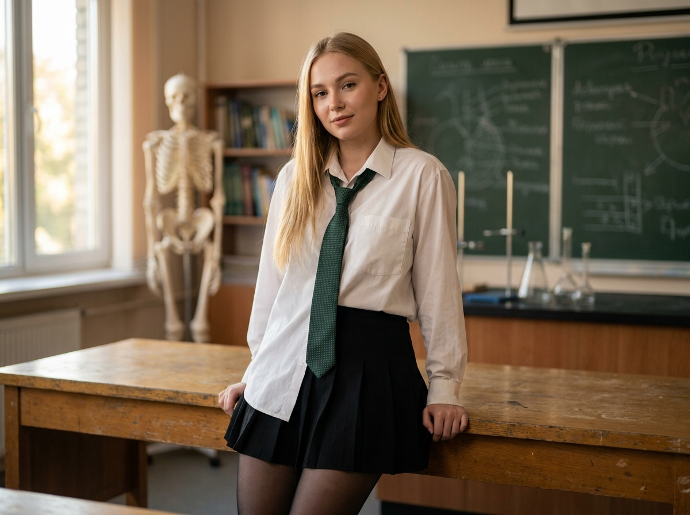
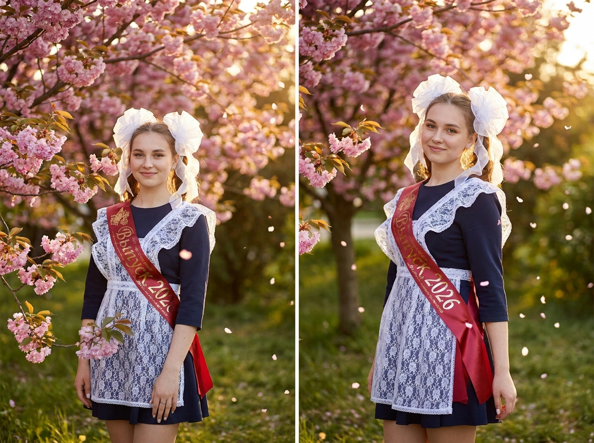

ИИ-фото на выпускной: 10 промптов для нейросети

Выпускной хочется запомнить красивыми фотографиями, но не всегда получается найти удачную локацию, фотографа и подходящий образ. Генерация помогает собрать нужную сцену заранее: от школьного кабинета до сада на закате.
В подборке — 10 промптов для одиночных портретов, парных кадров и фотографий с подругой. Здесь есть классические костюмы, ретро-форма, студийная съёмка, библиотека, кабинет химии и романтичные кадры на природе.
Как сгенерировать такое фото: пошагово
Нужен снимок анфас при ровном свете, лицо в кадре целиком, без тёмных очков и головных уборов. Разрешение от 1000 пикселей по короткой стороне. Чем чётче исходник, тем точнее модель повторит черты.
Выберите сценарий ниже и нажмите «Копировать» — текст уйдёт в буфер целиком, вместе с командой сохранения внешности. Эта команда стоит первой строкой и отвечает за то, чтобы на выходе было ваше лицо, а не случайное.
Кнопка «Сгенерировать» рядом с каждым промптом открывает модель в новой вкладке. Nano Banana Pro работает с референсом лица — в отличие от моделей, которые генерируют портрет с нуля и узнаваемость теряют.
Промпт — в поле ввода, портрет — через загрузку референса. Порядок значения не имеет, но без референса команда сохранения внешности работать не будет: модели нечего сохранять.
Для сторис и ленты берите 9:16, для превью и обложек — 4:3. Первый результат редко идеален: если поза или свет ушли не туда, поправьте соответствующую часть промпта и запустите заново. Обычно хватает двух-трёх итераций.
10 промптов для генерации
1. Выпускница у окна
Строго сохранить внешность по загруженному референсу: черты лица, пропорции, мимику и текстуру кожи без изменений. Фотореалистичный вертикальный снимок выпускницы в школьном кабинете. Девушка сидит на деревянном стуле за партой, показана в профиль вправо: голова и взгляд направлены к окну, корпус немного развёрнут. Камера находится на уровне глаз, композиция средняя — в кадре лицо, торс и часть платья. Одна расслабленная рука лежит на столешнице, вторая опирается рядом на край стола. У девушки светлая кожа с естественной микротекстурой, гладкая укладка, выразительные глаза и натуральный макияж с мягким блеском на губах. В волосах белый декоративный бант или лента. На ней чёрное платье-сарафан с длинными рукавами, поверх — полупрозрачный светлый фартук с кружевными воланами. Через плечо проходит розовая выпускная лента с разборчивой надписью «Выпускник 2026». Тёплый дневной свет из окна, натуральные тени, реалистичные ткани, высокая детализация, вертикальный формат.
2. Портрет в кабинете химии

Строго сохранить внешность по загруженному референсу: черты лица, пропорции, мимику и текстуру кожи без изменений. Вертикальная фотореалистичная фотография выпускника в школьном кабинете химии. Юноша 17–19 лет сидит за деревянной партой и прямо смотрит в объектив. Поза спокойная и уверенная: спина ровная, корпус слегка подан вперёд, одна рука поддерживает подбородок, пальцы находятся возле лица, вторая лежит на столе рядом с тетрадями и листами. Светлая кожа без эффекта пластика, аккуратная объёмная укладка, чисто выбритое лицо, естественные брови, реалистичные пропорции и серьёзное мягкое выражение. На нём графитовый классический пиджак с заметной фактурой ткани, белая рубашка и ровно завязанный тёмный галстук. На запястье видны часы или металлический браслет с естественными бликами. На столе лежат учебники, тетради, ручки и листы с заметками. На заднем плане — лабораторная посуда, плакаты и оборудование кабинета. Мягкий рассеянный свет, натуральные цвета, резкий фокус на лице, малая глубина резкости.
3. Две девушки за партой

Строго сохранить внешность по загруженному референсу: черты лица, пропорции, мимику и текстуру кожи без изменений. Горизонтальная постановочная фотография двух выпускниц в школьной актовой зоне или классе. Камера расположена примерно на уровне стола, передний план занимает небольшая деревянная парта с зелёными металлическими ножками. Слева девушка стоит или сидит, поставив ноги на пол, немного наклоняется вперёд и раскрывает руки в выразительном жесте. Правая ладонь поднята к лицу, пальцы естественно раздвинуты, будто она говорит «привет» или «пауза»; левая рука касается ленты у воротника либо завязки банта. У неё расслабленная мимика, глаза прикрыты, на голове бордовый выпускной бант. Справа подруга сидит за столом прямо, корпус развёрнут к камере, одна рука лежит на столешнице, другая держит выпускную ленту. Обе одеты в тёмные школьные платья с белыми фартуками и лентами. На фоне деревянные панели, гирлянды с фотографиями и воздушные шарики. Атмосфера репетиции праздничной сцены, мягкий тёплый свет, реалистичная анатомия рук, высокая детализация.
4. Книга и школьная библиотека

Строго сохранить внешность по загруженному референсу: черты лица, пропорции, мимику и текстуру кожи без изменений. Реалистичный портрет девушки в школьной библиотеке или кабинете, вертикальный кадр. Сохранить лицо и узнаваемые черты по референсу. Девушка стоит, слегка опираясь на деревянный стол, держит обеими руками старую книгу. Поза уверенная, но спокойная, плечи расслаблены, взгляд направлен в объектив. На ней свободная белая рубашка, чёрный галстук и тёмные брюки; на лице тонкие круглые очки. Макияж естественный, кожа живая, с мелкой текстурой и мягкими тенями. Позади видны книжные полки, школьная доска с формулами и надписями, часть кабинета в лёгком расфокусе. Тёплое мягкое освещение создаёт кинематографичное настроение, фон растворяется в нежном боке. Натуральная цветопередача, резкий фокус на лице и книге, реалистичные материалы, профессиональная фотография, высокая детализация. Исключить аниме и мультяшность, низкое качество, размытие, искажённые черты, лишние пальцы и руки, деформированные кисти, косые глаза, пластиковую кожу, пересвет, чрезмерную темноту, логотипы, watermark, обрезанную голову и двойное лицо.
5. Парный студийный портрет

Строго сохранить внешность по загруженному референсу: черты лица, пропорции, мимику и текстуру кожи без изменений. Фотореалистичный вертикальный студийный снимок в полный рост: на светло-сером однотонном фоне стоят двое выпускников, девушка слева и парень справа. Они слегка прижимаются друг к другу и улыбаются. Камера на уровне глаз или немного ниже, классический портретный ракурс, резкость на лицах, волосах и ткани одежды. Девушка повернута в три четверти, плечи расслаблены, голова чуть склонена к парню. Одной рукой она придерживает выпускную ленту у груди, второй мягко касается его плеча или области талии. На ней белая рубашка и длинная чёрная макси-юбка с лёгкими складками. Парень стоит прямо, сохраняет уверенную позу и смотрит в объектив. Одной рукой он держит ленту на груди, вторая свободно опущена вдоль тела. На нём белая рубашка, тёмные брюки и строгий пиджак. У обоих аккуратные воротники, чистые линии одежды и ленты через плечо с надписью «Выпускник 2026». Мягкий студийный свет, естественные тени, нейтральные цвета, профессиональная ретушь без пластиковой кожи.
6. Сад на золотом часу

Строго сохранить внешность по загруженному референсу: черты лица, пропорции, мимику и текстуру кожи без изменений. Фотореалистичное вертикальное выпускное фото на природе, почти в полный рост. Девушка стоит в ухоженном саду или парке на закате, корпус повернут к камере примерно на три четверти, осанка естественная и красивая. Голова слегка наклонена, взгляд направлен немного в сторону или прямо в объектив, выражение лица нежное и спокойное. Использовать загруженное фото как референс лица и сохранить форму овала, лба, бровей, глаз, век, носа, губ, линии челюсти, подбородка, оттенок кожи, мимику и реальные пропорции. Не заменять лицо и не усиливать бьюти-эффект. На девушке праздничное школьное платье тёмного цвета, поверх него белый кружевной фартук, через плечо проходит красная атласная выпускная лента. Вокруг зелёные деревья, кусты и цветущие растения, фон мягко размывается. Золотой час, тёплый солнечный контровой свет, подсветка волос, натуральные тени, дорогая атмосфера профессиональной фотосессии. Реалистичная кожа, естественные цвета, малая глубина резкости, высокая детализация.
7. Жест воздушного поцелуя

Строго сохранить внешность по загруженному референсу: черты лица, пропорции, мимику и текстуру кожи без изменений. Вертикальный фотореалистичный портрет выпускницы в школьном классе. Девушка сидит на деревянной парте, закинув ногу на ногу, одной рукой опирается на край стола, а вторую подносит к лицу в жесте воздушного поцелуя: пальцы собраны вместе, кисть выглядит естественно. Она смотрит в камеру и слегка улыбается, поза уверенная, настроение праздничное. Образ выполнен в чёрно-белой стилистике школьной формы: чёрное платье с белыми полосами и окантовкой, пышная многослойная юбка из тюля и органзы, по краям проходят полупрозрачные белые воланы и ленты. На голове белый кружевной или органзовый бант в форме капли либо бабочки, на ногах высокие белые гольфы и чёрные туфли на тонком каблуке. Волосы аккуратно уложены, отдельные пряди закреплены заколками, макияж лёгкий, кожа реалистичная. В кабинете видны парты, стулья, деревянный пол и большая школьная доска, свет от окна тёплый и рассеянный. Детализированная ткань, натуральные тени, правильная анатомия рук.
8. Объятие после звонка

Строго сохранить внешность по загруженному референсу: черты лица, пропорции, мимику и текстуру кожи без изменений. Близкая вертикальная постановочная фотография двух выпускниц на улице в момент тёплого объятия. Центральная девушка находится выше и сзади, вторая — внизу слева; обе повернуты друг к другу. Их лица мягко соприкасаются, глаза закрыты или слегка прикрыты, на лицах улыбки и искренняя радость. Девушка в центре прижимается щекой к подруге и обнимает её, подруга прижата к груди, её лицо видно частично, в боковом ракурсе. Руки аккуратно располагаются вокруг талии, спины и плеч, без лишних пальцев и анатомических искажений. Волосы слегка раздувает ветер, в кадре чувствуется движение. Обе одеты в тёмно-шоколадные, почти коричневые школьные наряды с белыми фартуками. На центральной девушке белый выпускной бант или лента, через плечо проходит праздничная лента. Фон — светлая улица или школьный двор с мягким размытием, естественный дневной свет, тёплая цветокоррекция, малая глубина резкости. Эмоциональный реалистичный кадр, высокая детализация лиц, волос и ткани.
9. Очки и школьная форма

Строго сохранить внешность по загруженному референсу: черты лица, пропорции, мимику и текстуру кожи без изменений. Кинематографичный реалистичный портрет девушки в школьном кабинете биологии или химии, вертикальный формат. Сохранить лицо и характерные черты по референсу, не менять пропорции и узнаваемость. Девушка стоит в расслабленной уверенной позе, слегка опираясь на деревянный стол, плечи свободны, взгляд направлен в камеру. На ней белая свободная рубашка, чёрная плиссированная мини-юбка, зелёный галстук с узором и чёрные колготки. Волосы длинные, прямые, светлые. Лёгкий естественный макияж, маленький пирсинг в носу и аккуратные украшения. Кожа живая, с натуральной текстурой, без пластиковой ретуши. На заднем плане видны учебный скелет, книги, школьные доски, лабораторные модели и предметы на столе. Мягкий тёплый свет, естественные цвета, фон растворяется в soft bokeh, лицо остаётся в чётком фокусе. Съёмка с объективом 85 мм, малая глубина резкости, высокая детализация. Исключить аниме, мультяшность, размытие, искажённое лицо, лишние пальцы и руки, деформированные кисти, косые глаза, пересвет, слишком тёмный кадр, текст и watermark.
10. Сакура и красная лента

Строго сохранить внешность по загруженному референсу: черты лица, пропорции, мимику и текстуру кожи без изменений. Профессиональная фотореалистичная фотография девушки на выпускной, вертикальный портрет по пояс или немного ниже талии. Использовать загруженное фото как главный референс и максимально точно сохранить лицо: овал, форму глаз, носа, губ, бровей, скул, челюсти, подбородка, оттенок кожи, мимику и реальные пропорции. Девушка стоит прямо или слегка в пол-оборота, держит красивую осанку, смотрит в камеру и мягко улыбается. Лицо — главный акцент кадра. Съёмка проходит в весеннем саду с розовыми цветами сакуры: вокруг летят отдельные лепестки, на фоне размытая зелёно-розовая растительность. Вечерний золотой час, тёплый солнечный свет подсвечивает волосы, лицо и плечи, создаёт нежные блики. На девушке тёмное школьное платье — чёрное или тёмно-синее, поверх белый кружевной фартук. Через плечо проходит красная атласная выпускная лента с аккуратной надписью «Выпускник 2026». Натуральная кожа, естественные цвета, мягкое боке, высокая детализация, реалистичная оптика и профессиональная композиция.
Что важно учесть в этом стиле
Для выпускных кадров лучше сразу задавать формат, план и положение камеры. Вертикаль 4:5 или 2:3 подходит для портрета и публикации в соцсетях, а горизонталь удобнее для групповой сцены. Если в кадре есть руки, позу нужно описывать отдельно: где лежит каждая ладонь, куда направлены пальцы, какая рука касается ленты.
Надписи на лентах нейросети часто искажают. Укажите текст в кавычках, попросите кириллицу и оставьте свободное место на ткани. Если результат всё равно нечитаемый, надпись проще добавить после генерации в редакторе.
Идеи для вариаций
- Замените кабинет химии на физический кабинет с глобусами, картами или старым проектором.
- Для парного портрета добавьте школьный звонок, букет или раскрытый альбом с фотографиями класса.
- Попросите съёмку после дождя: мокрый асфальт, отражения в лужах и тёплый свет из окон.
- Сделайте серию в одной стилистике: крупный портрет, кадр в полный рост и эмоциональное фото с друзьями.
- Поменяйте сакуру на сирень, пионы или аллею с высокими липами.
Как собрать свой промпт
Сначала задайте основу: кто в кадре, возраст, формат, план и действие. Затем опишите одежду, аксессуары и выпускные детали. После этого добавьте локацию, время суток, направление взгляда и настроение. Такой порядок помогает модели не потерять главные элементы.
Техническую часть лучше формулировать конкретно: «объектив 85 мм», «малая глубина резкости», «мягкий контровой свет», «фокус на лице». Для сохранения лица используйте референс, но проверяйте результат в нескольких вариантах: обычно нужно 3–6 генераций, чтобы исправить руки, текст на ленте и мелкие детали одежды.
Ошибки, из-за которых кадр не получается
- Слишком много действий. Если персонаж одновременно держит книгу, поправляет ленту и машет рукой, поза часто распадается. Оставьте одно главное движение.
- Не задан план. Без слов «по пояс», «средний план» или «полный рост» нейросеть может обрезать ноги или часть головы.
- Нечитаемая надпись. Текст на ленте лучше генерировать коротким, а финальную версию при необходимости добавить вручную.
- Слабое описание света. Укажите источник и характер освещения: окно, золотой час, рассеянный свет или контровая подсветка.
- Пластиковое лицо. Добавьте естественную текстуру кожи, натуральные тени и запрет на чрезмерную ретушь.
- Ошибки в руках. Пропишите положение каждой кисти и добавьте негативные ограничения: без лишних пальцев, рук и деформированных суставов.
Частые вопросы
Как сделать такое ИИ-фото бесплатно?
Для первых попыток подойдут Kandinsky и Шедеврум: у них можно генерировать изображения по текстовому описанию, но сохранение конкретного лица по референсу может работать нестабильно или быть недоступно в нужном режиме. Krea AI и Arena.ai удобны для экспериментов и сравнения вариантов, однако функции работы с загруженным лицом, очереди и доступное число генераций меняются. Для узнаваемого результата используйте качественное фото анфас, хорошо освещённое лицо и проверяйте правила сервиса перед загрузкой.
Как сохранить лицо на выпускном ИИ-фото?
Загрузите чёткий референс без фильтров и отдельно попросите сохранить форму лица, глаза, нос, губы, брови, оттенок кожи и пропорции. Не перегружайте запрос сильной стилизацией. Лучше сделать несколько вариантов с одинаковым описанием и выбрать тот, где лицо и руки выглядят естественно.
Почему нейросеть искажает надпись «Выпускник 2026»?
Генераторы часто ошибаются с мелким текстом и кириллицей. Укажите надпись в кавычках, задайте крупные контрастные буквы и разместите ленту фронтально. Если слово всё равно искажено, сгенерируйте чистую ленту и добавьте текст поверх изображения в графическом редакторе.
Как получить реалистичную школьную фотографию?
Опишите не только внешность, но и свет, объектив, положение камеры, фактуру ткани и фон. Добавьте «фотореалистичная фотография», «натуральная кожа», «мягкие тени» и «резкий фокус на лице». Для сцен с несколькими людьми отдельно распишите позу каждого, чтобы модель не смешивала руки и лица.